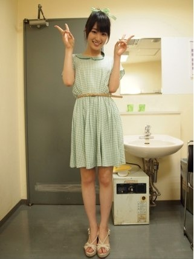

2012/0729Sun（´-`）.｡oO(かずみん×83
こんばんは(*^^*)
いつも応援ありがとうございます！
昨日は北海道でミニ握手会の
ファイナルを迎えました！
来てくださった北海道の方、
遠征して下さった方、
ありがとうございました！

なんだか...
とてもいい思い出になったなぁ...
5月から始まった
初の5人での個別握手会。
名古屋、大阪、福岡、北海道、
4カ所を周らせてもらいました。
大阪でのミニ握手会は
じつは3rdの選抜発表の
前の日だったのです。
まだまだ自分の力不足のせいで
私のレーンはほとんど人が
来ない状態も沢山あって、
初めて握手会で泣きそうになりました。
他のメンバーの楽しそうな声を聞いて、
珍しくネガティブになったりも。
でもだからこそ、
来てくださるみなさんが
ありがたくて...(T ^ T)
もっともっと頑張らなくちゃなって
思えました！！
きっとこの握手会ですごく
成長できたと思います！
北海道は乃木坂に入ってから
1度も来た事がなかったので
正直特に不安だったのですが、
沢山来てくださって本当に
嬉しかったです(#^.^#)
ありがとうございました！
そして、生駒ちゃん、ななみん、
まっつん、まいやん
お疲れ様でした( ´ ▽ ` )ﾉ
もうみんなとミニ握手会をやることは
ないのかな...(T ^ T)
仲良しな5人組みなだけに
なんだかさみしいです。
これからもずっと
楽しいみんなが大好き\(//∇//)\
-------
今日のARイベントも
来てくださった方、
ありがとうございました！
久しぶりのイベントだったな〜(^^)
ARという技術は...
「3D実写AR」といった新感覚の
エンタテインメントアプリです。
アプリをダウンロードして、
認識対象のポスターにカメラを
翳すと乃木坂メンバーがポスターから
3Dで動き出すんですよ〜！
今後の乃木坂の
企画で様々な役目をしてくれると
思うので、皆様楽しみにしていて
下さい(*^^*)
少人数でのイベント
ということで残念ながら今回は
来れなかった方、ごめんなさい。
次みなさんと会う日を
楽しみにしてます！
--------
それでは、今日の乃木どこも
お楽しみに(^-^)/
おやすみなさい...☆
2012/07/29 23:48
コメント(459)
ペイッ！
昨日はお疲れｗ
メガシャキ3本で寝てませんｗ
また行くから肘こすっててｗ
ばい！！
昨日はお疲れｗ
メガシャキ3本で寝てませんｗ
また行くから肘こすっててｗ
ばい！！
乃木どこなう！
いろんな料理がでて面白い（笑）
いろんな料理がでて面白い（笑）
お疲れさま～♪
個別のときみたよ！
乃木なう
北海道＆新技術発表会お疲れさま！！
乃木どこ
カレー＆魚美味そうだったー！
かずみんこんばんわー
北海道お疲れ様～
リボン可愛いわー
似合ってるでw
ARもヤバイね
さい
北海道お疲れ様～
リボン可愛いわー
似合ってるでw
ARもヤバイね
さい
ヤッシーです(^-^)v
北海道に行った人、うらやましいな…。
さすがに山梨から北海道は遠過ぎです…(T^T)
大学の友達は行きましたよ(^o^)
後、1ヵ月ちょっと我慢やね…。
へばっまずな(^-^)/~~
北海道に行った人、うらやましいな…。
さすがに山梨から北海道は遠過ぎです…(T^T)
大学の友達は行きましたよ(^o^)
後、1ヵ月ちょっと我慢やね…。
へばっまずな(^-^)/~~
日村さんが買ってくれたやつだね(^-^)
乃木どこ 見てるよ('-^*)
乃木どこ 見てるよ('-^*)
かずみさん、お疲れ様。
シャンプー握手会お疲れ。
名古屋、大阪と参加させてもらって、すごく楽しかったよ。
かずみさんのことますます好きになったしね！
料理がうまいかずみさんは、理想だな。
音がないギターもめちゃくちゃいい曲やな
早くかずみさんに会いたいわ
シャンプー握手会お疲れ。
名古屋、大阪と参加させてもらって、すごく楽しかったよ。
かずみさんのことますます好きになったしね！
料理がうまいかずみさんは、理想だな。
音がないギターもめちゃくちゃいい曲やな
早くかずみさんに会いたいわ
コメ2回目～＼(^o^)／
北海道のイベントおつかれさまー！
長崎おるけんミニ個別で福岡来てほしいなあ♪
明日テストだから大変だ！
明日もがんばろー！
おやすみなさい。
こんばんは！
俺は、かずみん推しから乃木坂好きになりました！
かずみんなしでは、乃木坂に興味もってなかったかな！
これからも応援し続けます！
頑張ってね！
俺は、かずみん推しから乃木坂好きになりました！
かずみんなしでは、乃木坂に興味もってなかったかな！
これからも応援し続けます！
頑張ってね！
お疲れ様です(^-^)
かずみんの力のなさじゃあないよ♪大丈夫
まだまだこれからやしかずみんにはかずみんらしさがあるからなあ♪
また話しよう
体に気をつけてゆっくり休んで頑張っていきましょう！
かずみんの力のなさじゃあないよ♪大丈夫
まだまだこれからやしかずみんにはかずみんらしさがあるからなあ♪
また話しよう
体に気をつけてゆっくり休んで頑張っていきましょう！
北海道お疲れ様(o^∀^o)
おやすみ(σω-)。о゜
おやすみ(σω-)。о゜
乃木どこ楽しいわ～
かずみんの料理食べたいやっさ!!
走れbicycleの握手会行くよ(^^)/
楽しみにしとくさね(笑)
涼しそうで爽やか
可愛い洋服だなぁ
可愛い洋服だなぁ
ARっていう技術すごそう(￣∇￣)
乃木どこ見たよ
かずみん目立ってた(*^▽^*)
9月の握手会まで待ち遠しい!!
乃木どこ見たよ
かずみん目立ってた(*^▽^*)
9月の握手会まで待ち遠しい!!
かずみんお疲れ様♪
いろいろあると思うけど、かずみんが努力してるのファンのみんなには伝わってるから！
これからも頑張って！
いろいろあると思うけど、かずみんが努力してるのファンのみんなには伝わってるから！
これからも頑張って！
乃木どこ？みたよ。
火おこすの手こずってたね。
僕が代りにやりたかったよ。
すごく料理おいしそうやったよ！
火おこすの手こずってたね。
僕が代りにやりたかったよ。
すごく料理おいしそうやったよ！
かずみんばんわ(*^o^*)
乃木どこ見てるよ～
やっぱりかずみんは料理上手いね
安心して見てられるよ！
料理美味しそうだったな～
来週も楽しみだよ(^O^)
でわでわこの辺で@(・●・)@
まいやんと握手してる時、2回もかずみんが後ろ通ったねww
気付いたらポニーテールになってて可愛かったよ( ´ ▽ ` )ﾉ
昨日、今日お疲れシーサー
気付いたらポニーテールになってて可愛かったよ( ´ ▽ ` )ﾉ
昨日、今日お疲れシーサー
北海道と名古屋と福岡いけんで
ごめんね(´･ω･`)
北海道も行こうとしたんやけど
お祭りがあるから
掛け持ちしてる所が忙しくなるで
休み取るん辞めたんよ( -_-)
大阪では、いっぱいループしたし
3部は最後まで高山レーン
開いてたね(ﾟ∀ﾟ)
うん。
色々思うことあると思う。
けど、高山は高山やん(○´∀｀○)
一実のことまだまだ知らんし
そんなさおりが偉そうなこと
言えんけど、でもさー。
一実が一実らしくいれば
きっと沢山増えるはず。
たまにはさおりに弱音はいてね(´･ω･`)
一実は、頑張りすぎな所あるから
たまにはさー力抜いてね(´･ω･`)
あっ、ライブいくけんね(○´∀｀○)
ごめんね(´･ω･`)
北海道も行こうとしたんやけど
お祭りがあるから
掛け持ちしてる所が忙しくなるで
休み取るん辞めたんよ( -_-)
大阪では、いっぱいループしたし
3部は最後まで高山レーン
開いてたね(ﾟ∀ﾟ)
うん。
色々思うことあると思う。
けど、高山は高山やん(○´∀｀○)
一実のことまだまだ知らんし
そんなさおりが偉そうなこと
言えんけど、でもさー。
一実が一実らしくいれば
きっと沢山増えるはず。
たまにはさおりに弱音はいてね(´･ω･`)
一実は、頑張りすぎな所あるから
たまにはさー力抜いてね(´･ω･`)
あっ、ライブいくけんね(○´∀｀○)
かずみんごめんなさいねΣ(￣。￣ﾉ)ﾉ
過疎らせないとおもってたのに
東京会場は頑張るー(^-^)
行っても緊張であんま話せないので
たくさんいきます‼
最後な…
だんごサイコー
かずみん こんばんは( ´ ▽ ` )ﾉ
握手会 新技術発表会お疲れさまぁ！
田舎に住んでてなかなかイベント行けない(~_~;)
でもいつも遠くから応援しとんけんね！
自分みたくイベントまで遠出できないけど応援してる
ってファンは沢山いると思うよ！
やからあんまりネガティブにならんでね(￣▽￣)
3D実写ARすごいね！(◎_◎;)
早く使ってみたいわぁ(((o(*ﾟ▽ﾟ*)o)))
乃木どこ放送ないからリアルタイムでは無理やけど
見たら感想書くね♪
お疲れ様でした(^^)
イベントも握手会も行けなかった…
早くかずみんに会いたい(>_<)
乃木どこ面白かったよ！
かずみんの手料理が食べたい！
来週も楽しみだぁ(*≧∀≦*)
肝試し！どうなることやら…
あと女子部屋…
楽しみすぎるｗｗ
イベントも握手会も行けなかった…
早くかずみんに会いたい(>_<)
乃木どこ面白かったよ！
かずみんの手料理が食べたい！
来週も楽しみだぁ(*≧∀≦*)
肝試し！どうなることやら…
あと女子部屋…
楽しみすぎるｗｗ
かずみんこんばんは！
乃木どこ？見たよ！
またまたかずみんの料理の腕が発揮されましたね！
夜中なのにお腹すいてきた＼(^o^)／
握手会は終わってしまったけど、次のシングルでもまたあるから、そのときまで楽しみにしておくね！
乃木どこ？見たよ！
またまたかずみんの料理の腕が発揮されましたね！
夜中なのにお腹すいてきた＼(^o^)／
握手会は終わってしまったけど、次のシングルでもまたあるから、そのときまで楽しみにしておくね！
昨日は10回ありがとう‼( *｀ω´) かずみんに会えて元気でたああああ＼(^o^)／笑
いろんな話できて楽しかったあ(^^)また札幌に来てね！俺もはやく東京に行けるように頑張りやす‼( *｀ω´)
>>まだまだ自分の力不足のせいで
私のレーンはほとんど人が
来ない状態も沢山あって、
初めて握手会で泣きそうになりました。
他のメンバーの楽しそうな声を聞いて、
珍しくネガティブになったりも。
なにいってんの！俺が言うのもなんだけどかずみんレーンにいる人はめっちゃ楽しそうだったぞｗ俺も数回だけど行ったしｗ
財布の都合で行きたくても行けない人がいっぱいいるから列が切れちゃうのはしょうがないよ！
そんな時でも楽しく踊ってんのがかずみんじゃんｗ
俺も通りがかりでなにしてんのｗｗｗｗって言ったじゃんｗ
そんな機会のないメンバーもいるんだからその時を楽しめ！ｗ
おいしいもん食べれるのも役得だしねｗ
ウワー・・・長文書いてもうたｗｗｗ俺キモスｗ
私のレーンはほとんど人が
来ない状態も沢山あって、
初めて握手会で泣きそうになりました。
他のメンバーの楽しそうな声を聞いて、
珍しくネガティブになったりも。
なにいってんの！俺が言うのもなんだけどかずみんレーンにいる人はめっちゃ楽しそうだったぞｗ俺も数回だけど行ったしｗ
財布の都合で行きたくても行けない人がいっぱいいるから列が切れちゃうのはしょうがないよ！
そんな時でも楽しく踊ってんのがかずみんじゃんｗ
俺も通りがかりでなにしてんのｗｗｗｗって言ったじゃんｗ
そんな機会のないメンバーもいるんだからその時を楽しめ！ｗ
おいしいもん食べれるのも役得だしねｗ
ウワー・・・長文書いてもうたｗｗｗ俺キモスｗ
どーも！オレンジです！
握手会お疲れ様です(*^^*)
写メあざーす(^^ゞ
待ち受け安定(照)
最近待ち受け変更多い(笑)
ライヴ名古屋、大阪とか…
行けない(ToT)
寝ます…
おやすみ
あ、musicJapanの収録当たったよ＼(^^)／
行くからよろしくね(^^)v
それじゃあこの辺で！
今日はお疲れ様(*^^*)
明日も頑張ろう
愛羅武勇
 オレンジ
オレンジ
握手会お疲れ様です(*^^*)
写メあざーす(^^ゞ
待ち受け安定(照)
最近待ち受け変更多い(笑)
ライヴ名古屋、大阪とか…
行けない(ToT)
寝ます…
おやすみ
あ、musicJapanの収録当たったよ＼(^^)／
行くからよろしくね(^^)v
それじゃあこの辺で！
今日はお疲れ様(*^^*)
明日も頑張ろう
愛羅武勇
北海道ミニ個別お疲れ様！
服かわいくて似合ってるよ！
３rdの個別では出来る限りレーンぐるぐるするからね(*^^*)
またミニ個別やらないのカナ？
今日のイベントもお疲れ様＾＾
俺は明日からテスト...
ガジがんばるよ！笑
かずみんもファイティーン☆
じゃあ次の更新も楽しみにしてる♪
服かわいくて似合ってるよ！
３rdの個別では出来る限りレーンぐるぐるするからね(*^^*)
またミニ個別やらないのカナ？
今日のイベントもお疲れ様＾＾
俺は明日からテスト...
ガジがんばるよ！笑
かずみんもファイティーン☆
じゃあ次の更新も楽しみにしてる♪
頑張りましょう♪
かずみん、こんばんは！
個別握手会お疲れさまでした！
北海道まで来てくれて、ありがとう(^▽^)
だけど俺ね、回ったのは
ななみん、まいやん、さゆりんの三人なんだよね。
生駒ちゃんのブログにも書いたけど、かずみんのところに行けば良かったよ(>_<)
せっかく来てくれたのに、ごめんね(´д`)
俺も笑顔を大切にしてるから、実際に話をしてたら楽しめそうだなぁ♪
また北海道でイベントやってほしい！
乃木どこの「全員」かずみんヤバかったよ(^▽^)♭笑
北海道の次の日に東京でのイベント、お疲れ様です！
おやすみ(‐μ-)/zzZ
個別握手会お疲れさまでした！
北海道まで来てくれて、ありがとう(^▽^)
だけど俺ね、回ったのは
ななみん、まいやん、さゆりんの三人なんだよね。
生駒ちゃんのブログにも書いたけど、かずみんのところに行けば良かったよ(>_<)
せっかく来てくれたのに、ごめんね(´д`)
俺も笑顔を大切にしてるから、実際に話をしてたら楽しめそうだなぁ♪
また北海道でイベントやってほしい！
乃木どこの「全員」かずみんヤバかったよ(^▽^)♭笑
北海道の次の日に東京でのイベント、お疲れ様です！
おやすみ(‐μ-)/zzZ
新技術発表会お疲れ様でした♪( ´▽｀)
とっても楽しかったよ♪
ゆーてかずみん上手だからあんまり見れんかったな…ポニテ可愛かった(o^^o)
久しぶりに皆が見れて嬉しかったな～
キラキラしてて、可愛くて…
ご馳走様でした！
ではまたねん♪
とっても楽しかったよ♪
ゆーてかずみん上手だからあんまり見れんかったな…ポニテ可愛かった(o^^o)
久しぶりに皆が見れて嬉しかったな～
キラキラしてて、可愛くて…
ご馳走様でした！
ではまたねん♪
かずみーーーん！ヽ(^0^)ﾉ
今日も世界一可愛いね！
北海道お疲れ様( ^^)/
自分も力不足で寂しい思いさせてしまって
ゴメン｡ﾟ(ﾟ´Д｀ﾟ)ﾟ｡
かずみんをずーーーっと応援するからね(^_-)-☆
Zepp Osaka Zepp Nagoyaのライブ決まったね
おめでとう(≧▽≦)
東京や関東圏でやってほしいなぁ(^-^)
かずみん大好きよ！！
らびゅ！
今日も世界一可愛いね！
北海道お疲れ様( ^^)/
自分も力不足で寂しい思いさせてしまって
ゴメン｡ﾟ(ﾟ´Д｀ﾟ)ﾟ｡
かずみんをずーーーっと応援するからね(^_-)-☆
Zepp Osaka Zepp Nagoyaのライブ決まったね
おめでとう(≧▽≦)
東京や関東圏でやってほしいなぁ(^-^)
かずみん大好きよ！！
らびゅ！
北海道の握手会なまら楽しかった(*^O^*)
生であのかずみんのクシャ笑顔が見れて本当に良かった！
かずみんの笑顔が大好きって伝えられたし、かずみんからも僕の笑顔も素敵ですねって言われたのがなまら嬉しかった♪
３部からポニーテールになってて、それ以降は握手できなかったんだけど、ジェスチャーでポニーテールいいねって送ったら返してくれたし！
やっぱかずみん最高！
また北海道来てね♪
生であのかずみんのクシャ笑顔が見れて本当に良かった！
かずみんの笑顔が大好きって伝えられたし、かずみんからも僕の笑顔も素敵ですねって言われたのがなまら嬉しかった♪
３部からポニーテールになってて、それ以降は握手できなかったんだけど、ジェスチャーでポニーテールいいねって送ったら返してくれたし！
やっぱかずみん最高！
また北海道来てね♪
久しぶり！
半年ぶりのコメ
いつか
かずみんの所に会いに行くね(*^o^*)
お疲れ様でした！
また５人で握手会まわれるといいですね♪
きっと、かずみんは楽しい人だから、
これからどんどんレーンに人増えていくと思いますよ！！
また５人で握手会まわれるといいですね♪
きっと、かずみんは楽しい人だから、
これからどんどんレーンに人増えていくと思いますよ！！
こんばんは。
昨日、北海道握手会行ったよ。
なんか話そうと思ってたことあったんだけど、かずみんがかわいすぎて見とれてたら、応援してますってベタな言葉しか発せられなかったぜ。でもかずみんから、地元の方ですかってかけてくれて我にかえった。あぶねえ、見とれたまま終わるとこだったぜ。
なわけで9月の幕張の個握には札幌から参戦予定なので、今度は見とれすぎないようにリベンジします。
あっ、服もアップした髪型もかわいかったよ。
乃木どこも見た。全員高山面白い。
じゃあ明日も頑張って。
昨日、北海道握手会行ったよ。
なんか話そうと思ってたことあったんだけど、かずみんがかわいすぎて見とれてたら、応援してますってベタな言葉しか発せられなかったぜ。でもかずみんから、地元の方ですかってかけてくれて我にかえった。あぶねえ、見とれたまま終わるとこだったぜ。
なわけで9月の幕張の個握には札幌から参戦予定なので、今度は見とれすぎないようにリベンジします。
あっ、服もアップした髪型もかわいかったよ。
乃木どこも見た。全員高山面白い。
じゃあ明日も頑張って。
かずみさんのファンは
まだまだ増えるよっ
いい人だもんヾ(=^▽^=)ノ
まだまだ増えるよっ
いい人だもんヾ(=^▽^=)ノ
ぐるかー握手会お疲れ様でした！
僕も、２ndから握手会参加させてもらって、
かずみんのレーンにたくさんお邪魔させてもらいました！！
かずみんが覚えてくれとったり、
最高の笑顔見せてくれたり、
ひじこすってくれたり、、、
数え切れないぐらいいい思い出できたよ☆
そして、どんどんかずみんにはまったｗ
握手に行く度に、かずみん推しでよかった♪って思ったし☆
もうやめられませんｗ
こっちも、もっともっとかずみんに喜んでもらえるように
2ndでの経験を活かして
3rdでもいっぱい会いに行くのでよろしく！！
ちなみに、新技術・・・
落選したのです・・・
ざんね～ん。。。
でわ、最後に、
約3ヶ月、
おいでシャンプ～握手会イベントお疲れ様でした！！
僕も、２ndから握手会参加させてもらって、
かずみんのレーンにたくさんお邪魔させてもらいました！！
かずみんが覚えてくれとったり、
最高の笑顔見せてくれたり、
ひじこすってくれたり、、、
数え切れないぐらいいい思い出できたよ☆
そして、どんどんかずみんにはまったｗ
握手に行く度に、かずみん推しでよかった♪って思ったし☆
もうやめられませんｗ
こっちも、もっともっとかずみんに喜んでもらえるように
2ndでの経験を活かして
3rdでもいっぱい会いに行くのでよろしく！！
ちなみに、新技術・・・
落選したのです・・・
ざんね～ん。。。
でわ、最後に、
約3ヶ月、
おいでシャンプ～握手会イベントお疲れ様でした！！
かずみんさん、こんばんは
かずみんに会いたくて仕方ない
泣かないでー？
正直力になれないことが悔しい
慰めてあげられないことが悔しい
握手会行けたとしてもいつも1枚だけだからなぁ
まともに応援してあげれてないよね
でもほんと大好きですよ 照
はやく会いたい 笑
かずみんに会いたくて仕方ない
泣かないでー？
正直力になれないことが悔しい
慰めてあげられないことが悔しい
握手会行けたとしてもいつも1枚だけだからなぁ
まともに応援してあげれてないよね
でもほんと大好きですよ 照
はやく会いたい 笑
日村さんに買ってもらった
服だ!(笑)
可愛い(*´・ェ・).゜+。
かずみん、大丈夫だよ!
握手会が全てじゃないから。
来れなくてもかずみんのこと
大好きなひとは沢山いるよ。
落ち込んでる一実さんは
見たくない!
いつも明るいかずみんが
好きだよ(∩∀`*)
服だ!(笑)
可愛い(*´・ェ・).゜+。
かずみん、大丈夫だよ!
握手会が全てじゃないから。
来れなくてもかずみんのこと
大好きなひとは沢山いるよ。
落ち込んでる一実さんは
見たくない!
いつも明るいかずみんが
好きだよ(∩∀`*)
かずみんがんばって(^^)
こんばんは。おいでシャンプーの握手会お疲れ様でした
かずみんとの握手は9月の名古屋個別が最初です
かずみんレーンをくるくる回ります。もう悲しい思いはさせないよ
かずみんとの握手は9月の名古屋個別が最初です
かずみんレーンをくるくる回ります。もう悲しい思いはさせないよ
かずみん こんばんは!!
男も女も料理ができたほうがやっぱりいいのかな？
僕はまだまだ勉強中です。本だけは買った(笑)
９月２日の個別握手会の５部会いに行きます。
初めての個別握手会で(O.O;)(oo;)してます。
男も女も料理ができたほうがやっぱりいいのかな？
僕はまだまだ勉強中です。本だけは買った(笑)
９月２日の個別握手会の５部会いに行きます。
初めての個別握手会で(O.O;)(oo;)してます。
かずみん
お疲れーい
実は魚触れるんやろーw
まあ良いけどさ
あんま、
レーンに人来ないとか
気にしない方が良いんじゃん
もっと気楽に
かずみんはかずみん
のペースがあるやん、
あと、↑写メ良い
ガジ良い
燃えたw
じゃあ
おやすみ
頑張って！
お疲れーい
実は魚触れるんやろーw
まあ良いけどさ
あんま、
レーンに人来ないとか
気にしない方が良いんじゃん
もっと気楽に
かずみんはかずみん
のペースがあるやん、
あと、↑写メ良い
ガジ良い
燃えたw
じゃあ
おやすみ
頑張って！
かずみさん！
握手会やイベントお疲れさま。
かずみんネガティブは
だめぇー！
笑顔のかずみんでいてください！！
9月の個握には参加するからねぇー！！
あと乃木どこ？観たよ。
かずみん活躍してたね！
全員高山一実は面白っかた。(笑)
かずみんLOVE
ばいなら！
p(^^)q
握手会やイベントお疲れさま。
かずみんネガティブは
だめぇー！
笑顔のかずみんでいてください！！
9月の個握には参加するからねぇー！！
あと乃木どこ？観たよ。
かずみん活躍してたね！
全員高山一実は面白っかた。(笑)
かずみんLOVE
ばいなら！
p(^^)q
come back 七福神
切ないエピソード。だケド大丈夫、大丈夫よ！！
あ、今日、観させて頂きましたよ。3Dイベント！
いやあ、綺麗だったじゃないですか。相変わらずひじこすってたのが、チャーミングでしたね 笑
近距離でダンスが楽しめたので本当に良かったです。
パッション&色気がバンバン伝わってきました
また楽しみにしてます。
またね
札幌握手会お疲れ様！初めて高山に会えてホント嬉しかった！ずっと待ってたんだよ～
北海道に住んでたらなかなかイベントに行ける機会がすくないからね～ミニ個別の日程が発表されてからずっと楽しみに待ってました。
また札幌に来てね！今度はライブが観たい！絶対に観に行きますので！
北海道に住んでたらなかなかイベントに行ける機会がすくないからね～ミニ個別の日程が発表されてからずっと楽しみに待ってました。
また札幌に来てね！今度はライブが観たい！絶対に観に行きますので！


北海道お疲れ様。
北海道なのに暑かったねー。初北海道やったのに東京と変わらんかった。
まあ一実さんに会えたけんが、それだけで充分やけど。
たくさん握手してくれてありがとう。たくさんすきたか。ちょっとうざかったかもしれんけど。
ノープランでごめんね。一実さんの方から話してくれるしさ。そんだけ気を許してるってことで。
ミニ個握があってよかった。一実さんやまいやん達と仲良くなれたんはミニ個握のおかげやしね。
やっと信じてくれたってことで、最後に。
一実しかあああああああああああああああああああああああああああああああああああっ！
ちょっとあしゅりん風に言ってみた(笑)。